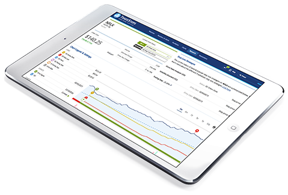

Portfolio Optimization and Balancing
From Day One, we help you find the risk pitfalls and profit
opportunities in your portfolio. Each position in your portfolio
will have a Stock State Indicator (SSI) to reflect its status
based on our algorithm – enter, exit, going up, going down or
sideways. And you can use our Risk Rebalancer tool to evaluate
potential adjustments to your overall portfolio risk.
Set Up Alerts for Important Targets
One of the key components to managing the positions in your
portfolios is the ability to get alerts, via text or email, when
your stocks hit certain targets. And TradeStops lets you set up an
almost infinite number of alert types.
From Day One, we help you find the risk pitfalls and profit
opportunities in your portfolio. Each position in your portfolio
will have a Stock State Indicator (SSI) to reflect its status
based on our algorithm – enter, exit, going up, going down or
sideways. And you can use our Risk Rebalancer tool to evaluate
potential adjustments to your overall portfolio risk.
RISK LESS,
MAKE MORE
with TradeStops

You can manage your risk by following the proven, disciplined
TradeStops system.
Buying, Selling and Holding
Don’t let fear of loss steer your decisions. Instead, use our
proven, data-driven tools to help you make your hardest decisions
— when to buy, how much, when to get out, how much volatility to
expect, and … when to do nothing.
TradeStops’ Volatility Quotient (VQ) helps you avoid holding a
stock too long or missing any moves up.
Knowledge is power(ful)
From Day One, we help you find the risk pitfalls and profit
opportunities in your portfolio. Each position in your portfolio
will have a Stock State Indicator (SSI) to reflect its status
based on our algorithm – enter, exit, going up, going down or
sideways. And you can use our Risk Rebalancer tool to evaluate
potential adjustments to your overall portfolio risk.